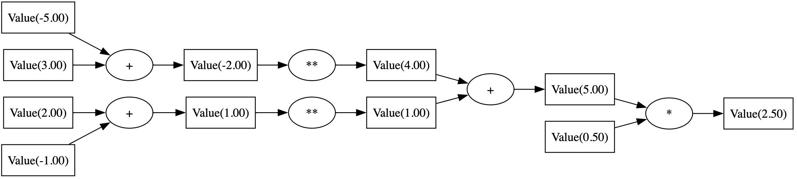

Demystifying Backpropagation by Building a Basic Autograd Engine
Jan 19th, 2024Welcome! Our goal in this post is to implement from scratch a very basic autograd engine based on micrograd (released by Andrej Karpathy for educational purposes).
By doing so, we will gain a better understanding of the backpropagation algorithm and autograd engines.
Ready? Let’s go! 🚀
What is an autograd engine?
An autograd engine is a component in many deep learning frameworks, such as PyTorch, that simplifies training neural networks by automating derivative calculations for backpropagation.
Here is a minimalist example with Pytorch where we define a loss as an expression of variables w1 and w2. Then by calling backward(), the autograd engine computes the partial derivatives of the loss with respect to all variables involved (here, w1 and w2) and stores them in each variable’s .grad attribute.
import torch
w1 = torch.tensor(2.0, requires_grad=True)
w2 = torch.tensor(3.0, requires_grad=True)
loss = ((w1 - 1)**2 + (w2 - 5)**2) * 0.5
loss.backward()
print(f"∂loss/∂w1 = {w1.grad}")
print(f"∂loss/∂w2 = {w2.grad}")
∂loss/∂w1 = 1.0
∂loss/∂w2 = -2.0
Training a neural network using backpropagation
Let’s first have a quick look at the backpropagation algorithm in order to understand what role the autograd engine plays in it.
1️⃣ Forward pass
During the forward pass, the neural network makes predictions using the current set of weights. The autograd engine keeps track of all the operations (like addition, multiplication, etc.) that were performed and the structure of the computational graph. A computational graph is a representation of all the operations and variables (like weights and biases) in your network.
Here is the computational graph for the expression loss = ((w1 - 1)**2 + (w2 - 5)**2) * 0.5 with w1 = 2 and w2 = 3:

2️⃣ Backward Pass
Once the loss is calculated, the backward pass begins. This is where the autograd engine really shines. ✨
For each operation in the graph, the autograd engine knows how to compute the derivative of that operation. It uses the chain rule to propagate these derivatives by traversing the computational graph in reverse order.
As a result, you get the gradient of the loss with respect to each weight. In our example, they are:
\[\frac{\partial \text{loss}}{\partial w_1} \qquad \frac{\partial \text{loss}}{\partial w_2}\]3️⃣ Update Weights
Finally, these gradients are used to update the weights of the network, usually with some kind of gradient descent (with a learning rate $\alpha$):
\[\left\{ \begin{aligned} w_1 &\leftarrow w_1 - \alpha \cdot \frac{\partial \text{loss}}{\partial w_1} \\ w_2 &\leftarrow w_2 - \alpha \cdot \frac{\partial \text{loss}}{\partial w_2} \end{aligned} \right.\]Implementing a basic autograd engine
🧮 Doing calculations
First we need to be able to do arithmetic operations. We want instances of Value to be used seamlessly in mathematical expressions, behaving like numeric types:
w1 = Value(2.0)
w2 = Value(3.0)
loss = ((w1 - 1)**2 + (w2 - 5)**2) * 0.5
For that, we start our class Value with the operations addition, subtraction, multiplication and power by a constant.
class Value(object):
def __init__(self, data):
self.data = data
def __repr__(self):
return f"Value(data={self.data:.2f})"
def __add__(self, other):
other = Value(other) if isinstance(other, (int, float)) else other
return Value(self.data + other.data)
def __radd__(self, other):
return self + other
def __sub__(self, other):
return self + (-1 * other)
def __mul__(self, other):
other = Value(other) if isinstance(other, (int, float)) else other
return Value(self.data * other.data)
def __rmul__(self, other):
return self * other
def __pow__(self, k):
return Value(self.data ** k)
And now we can do calculations:
w1 = Value(2.0)
w2 = Value(3.0)
loss = ((w1 - 1)**2 + (w2 - 5)**2) * 0.5
print(loss)
Value(data=2.50)
🔗 Keeping track of the computational graph
In order to backpropagate the gradients to all weights of the network, we need to keep track of the computational graph: every time we do a operation, we keep a reference to the inputs of that operations in a property children of the new instance of Value holding the result.
class Value(object):
- def __init__(self, data):
+ def __init__(self, data, children={}):
self.data = data
+ self.children = children
def __repr__(self):
return f"Value(data={self.data:.2f})"
def __add__(self, other):
other = Value(other) if isinstance(other, (int, float)) else other
- return Value(self.data + other.data)
+ return Value(self.data + other.data, children={self, other})
def __radd__(self, other):
return self + other
def __sub__(self, other):
return self + (-1 * other)
def __mul__(self, other):
other = Value(other) if isinstance(other, (int, float)) else other
- return Value(self.data * other.data)
+ return Value(self.data * other.data, children={self, other})
def __rmul__(self, other):
return self * other
def __pow__(self, k):
- return Value(self.data ** k)
+ return Value(self.data ** k, children={self})
Now after doing a calculation, we can inspect the children of the result:
w1 = Value(2.0) + 3
print(w1.children)
{Value(data=2.00), Value(data=3.00)}
💾 Storing the gradients
Let’s add a grad property to our class that will hold the gradient of each instance:
def __init__(self, data, children={}):
self.data = data
self.children = children
+ self.grad = 0.0
⏪ Backpropagating the gradients
This is the core of the backpropagation algorithm. We want to compute the derivatives of our loss with respect to all weights of the network:
\[\text{grad}_{w_i} = \frac{\partial \text{loss}}{\partial w_i}\]To do so, the end of the computational graph, holding the result of the loss. This derivative is simply 1:
\[\frac{\partial \text{loss}}{\partial \text{loss}} = 1\]Then we go back at every node: given that we know the partial derivative of the loss with respect to the result of the computation, we compute the partial derivatives of the loss with respect to each of the children.
➕ Addition
In the expression $y = w_1 + w_2$, we suppose we know the gradient $\text{grad}_y$ of the result $y$ and we want to backpropagate it to the inputs to compute $\text{grad}_{w_1}$ and $\text{grad}_{w_2}$.
By applying the chain rule:
\[\text{grad}_{w_1} = \frac{\partial \text{loss}}{\partial w_1} = \frac{\partial \text{loss}}{\partial y} \times \frac{\partial y}{\partial w_1} = \text{grad}_y \times 1 = \text{grad}_y\]and the same way, we get that $\text{grad}_{w_2} = \text{grad}_y$.
In other words, addition is simply forwarding the gradient to all of its inputs without changing it.
In our code, when we perform an addition, let’s then define a backward() function to forward the gradient to its input. Now here is our method Value.__add__:
def __add__(self, other):
if isinstance(other, int) or isinstance(other, float):
other = Value(other)
v = Value(self.data + other.data, children={self, other})
def backward():
self.grad = v.grad
other.grad = v.grad
v.backward = backward
return v
However, we need to address a special case not yet covered: when an input node appears multiple times in the computational graph. Take, for instance, the simple expression $y = w_1 + w_1$. If we use the assignment y.grad = w1.grad, it would be executed twice, with the second execution overwriting the first. This would incorrectly result in $\text{grad}_{w_1} = \text{grad}_y$ instead of the correct $\text{grad}_{w_1} = 2 \text{grad}_y$.
By switching to an incremental update with +=, we ensure proper accumulation of the gradient for each variable across all instances where it affects the final output.
def __add__(self, other):
if isinstance(other, int) or isinstance(other, float):
other = Value(other)
v = Value(self.data + other.data, children={self, other})
def backward():
- self.grad = v.grad
+ self.grad += v.grad
- other.grad = v.grad
+ other.grad += v.grad
v.backward = backward
return v
To ensure this process functions correctly, it’s essential to reset the gradients to zero before commencing their computation (we will do it later).
✖️ Multiplication
Doing the first operation (addition) was the hardest part. Now we just follow the same principle.
In the expression $y = w_1 \times w_2$, we suppose we know the gradient $\text{grad}_y$ of the result $y$ and we want to backpropagate it to the inputs to compute $\text{grad}_{w_1}$ and $\text{grad}_{w_2}$.
By applying the chain rule:
\[\text{grad}_{w_1} = \frac{\partial \text{loss}}{\partial w_1} = \frac{\partial \text{loss}}{\partial y} \times \frac{\partial y}{\partial w_1} = \text{grad}_y \times y\]and the same way, we get that $\text{grad}_{w_2} = \text{grad}_y \times x$.
In our code, when we perform an multiplication, the same way we did with addition, we define a backward() function to propagate the gradient to its input:
def __mul__(self, other):
if isinstance(other, int) or isinstance(other, float):
other = Value(other)
v = Value(self.data * other.data, children={self, other})
def backward():
self.grad += v.grad * other.data
other.grad += v.grad * self.data
v.backward = backward
return v
🔝 Power
We follow also the same idea for the power operator: in the expression $y = w^k$, we suppose we know the gradient $\text{grad}y$ of the result $y$ and we want to backpropagate to compute $\text{grad}{w}$.
By applying the chain rule:
\[\text{grad}_{w} = \frac{\partial \text{loss}}{\partial w} = \frac{\partial \text{loss}}{\partial y} \times \frac{\partial y}{\partial w} = \text{grad}_y \times kw^{k-1}\]We can then update the Value.__pow__ method to:
def __pow__(self, k):
v = Value(self.data ** k, children={self})
def backward():
self.grad += v.grad * k * (self.data ** (k-1))
v.backward = backward
return v
⚛️ Other nodes
All other nodes of the computational graph will have nothing to backpropagate. Let’s define a default empty method backward in the constructor of the class for all these nodes:
def __init__(self, data, children={}):
self.data = data
self.children = children
self.grad = 0.0
+ self.backward = lambda: None
🌀 Wrapping up
And that’s it for the Value class! Here is the complete code of this class:
class Value(object):
def __init__(self, data, children={}):
self.data = data
self.children = children
self.grad = 0.0
self.backward = lambda: None
def __repr__(self):
return f"Value(data={self.data:.4f})"
def __add__(self, other):
if isinstance(other, int) or isinstance(other, float):
other = Value(other)
v = Value(self.data + other.data, children={self, other})
def backward():
self.grad += v.grad
other.grad += v.grad
v.backward = backward
return v
def __radd__(self, other):
return self + other
def __sub__(self, other):
return self + (-1 * other)
def __mul__(self, other):
if isinstance(other, int) or isinstance(other, float):
other = Value(other)
v = Value(self.data * other.data, children={self, other})
def backward():
self.grad += v.grad * other.data
other.grad += v.grad * self.data
v.backward = backward
return v
def __rmul__(self, other):
return self * other
def __pow__(self, k):
v = Value(self.data ** k, children={self})
def backward():
self.grad += v.grad * k * (self.data ** (k-1))
v.backward = backward
return v
📊 Computing the gradients for all the nodes
To compute the gradients across the entire computational graph, it’s necessary to invoke the backward() function on all nodes. However, when this function is activated on a given node, it’s essential to be sure that the gradient of the node’s output has been already determined.
This requirement dictates a specific sequence for processing nodes. In a scenario where we need to process all child nodes prior to their parent, a topological sort of the graph is employed. However, for our purposes, where the parent must be processed before its children, we adopt the reverse topological sort of the graph.
Below is an implementation of the reverse topological sort:
def revtopo(graph):
visited = []
def walk(g):
if g not in visited:
for child in g.children:
walk(child)
visited.append(g)
walk(graph)
visited.reverse()
return visited
Now we are ready. We initialize the gradient of the last node to 1 because:
\[\text{grad}_\text{loss} = \frac{\partial \text{loss}}{\partial \text{loss}} = 1\]and we call backward() on all nodes in reverse topological order:
w1 = Value(2.0)
w2 = Value(3.0)
loss = ((w1 - 1)**2 + (w2 - 5)**2) * 0.5
loss.grad = 1.0
for node in revtopo(loss):
node.backward()
print(f"∂loss/∂w1 = {w1.grad}")
print(f"∂loss/∂w2 = {w2.grad}")
∂loss/∂w1 = 1.0
∂loss/∂w2 = -2.0
We get the same result as the PyTorch code presented in the introduction! 🎉
🎯 Optimizing the loss with respect to the parameters
Now that we’ve computed the gradients for all the parameters with respect to the loss, we can proceed with optimizing the loss.
In each epoch, the process begins with the forward pass, where we compute the loss using the current parameter values (in this case, w1 and w2). Following this, we initiate the backward pass by setting all gradients to zero, except for the loss gradient, which is set to 1. We then invoke the backward() method on each node of the computational graph, following a reverse topological order. The final step involves updating the parameters according to the gradient descent rule: $w \leftarrow w - \alpha \times \text{grad}_w$. In the following example, we utilize a learning rate $\alpha$ of 0.5.
w1 = Value(2.0)
w2 = Value(3.0)
weights = [x, y]
for i in range(50):
# forward pass
loss = ((w1 - 1)**2 + (w2 - 5)**2) * 0.5
print(loss)
# backward pass
for p in weights:
p.grad = 0.0
loss.grad = 1.0
for node in revtopo(loss):
node.backward()
# update gradients
for p in weights:
p.data -= 0.1 * p.grad
Value(data=2.5000)
Value(data=0.6250)
Value(data=0.1562)
Value(data=0.0391)
Value(data=0.0098)
Value(data=0.0024)
Value(data=0.0006)
Value(data=0.0002)
Value(data=0.0000)
Value(data=0.0000)
The loss converged to zero and w1 and w2 converged to their optimal value:
print(w1, w2)
Value(data=1.0010) Value(data=4.9980)
Further reading
I recommend watching the excellent lecture made by Andrej Karpathy, the author of micrograd, in which he is reimplementing micrograd from scratch step by step and goes up to building a feed-forward neural network and training it on data using micrograd!